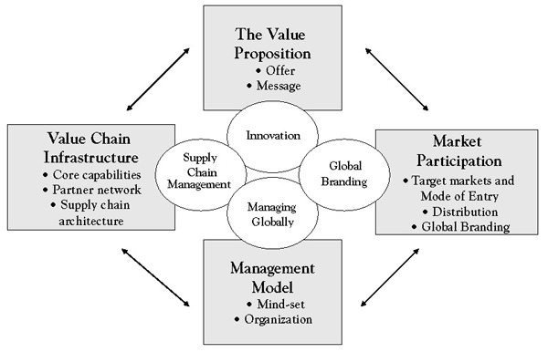

Every company has a core domestic strategy, although it may not always be explicitly articulated. This strategy most likely evolved over time as the company rose to prominence in its domestic market and reflects key choices about what value it provides to whom and how, and at what price and cost. At any point in time, these choices are reflected in the company’s primary business model, a conceptual framework that summarizes how a company creates, delivers, and extracts value. A business model is therefore simply a description of how a company does business. As shown in Figure 4.1 "Components of a Business Model", it describes who its customers are, how it reaches them and relates to them (market participation); what a company offers its customers (the value proposition); with what resources, activities, and partners it creates its offerings (value chain infrastructure); and, finally, how it organizes and manages its operations (global management model.
Figure 4.1 Components of a Business Model
